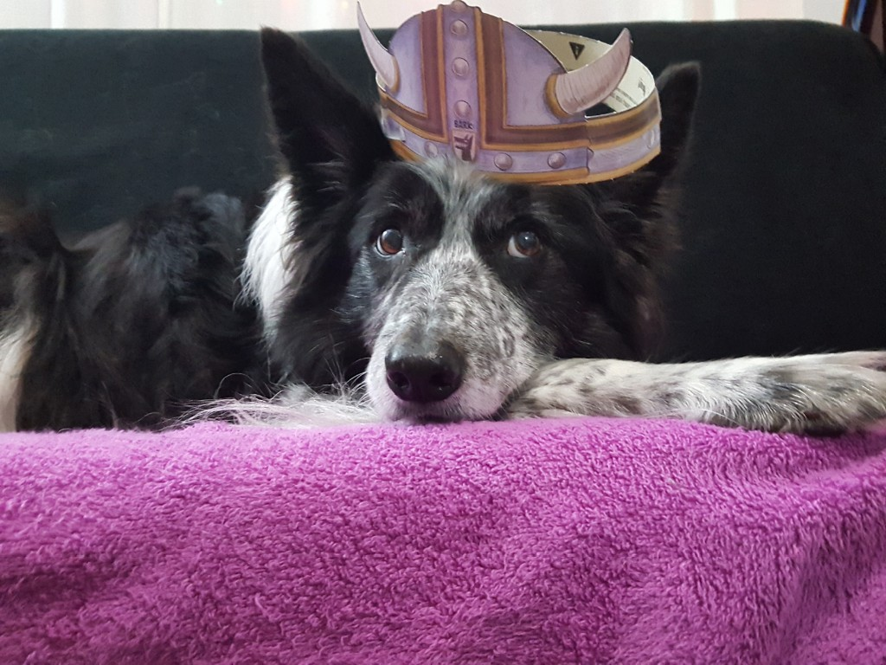

Kipp

Kipp in a silly hat.
Kipp was born on March 25, 2005, at a farm in Shelton, Washington.
He earned the Expert Trick Dog certification on March 28, 2011.
He earned the Expert Trick Dog certification on March 28, 2011.
He earned the Expert Trick Dog certification on March 28, 2011.
He earned the Expert Trick Dog certification on March 28, 2011.
He earned the Expert Trick Dog certification on March 28, 2011.
He earned the Expert Trick Dog certification on March 28, 2011.
Kipp's handy guide to a happy life:
1
2
3
4
5
6